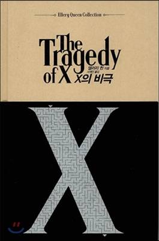
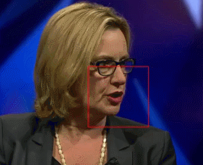
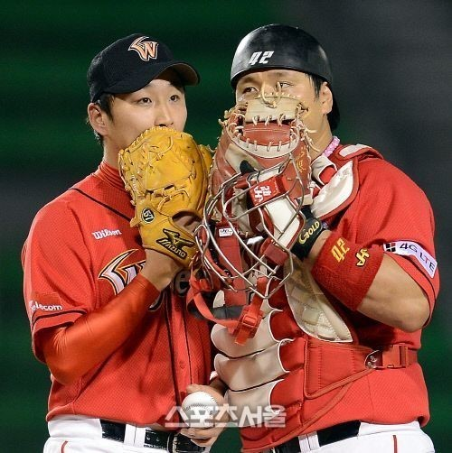
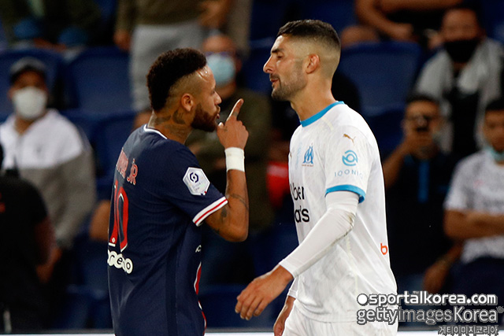
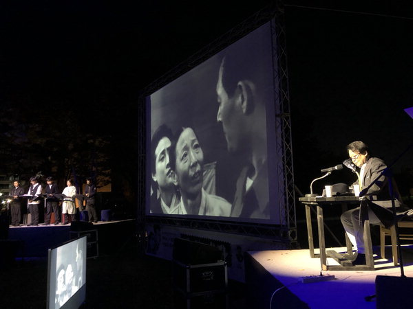

1. 말읽기는 이렇게 시작되었어요.
18세기 후반 독일의 하이니케(Samuel Heinicke)에 의해 최초로 실시되었습니다. 이후에 독일 농교육을 이끈 프리드리히 모리츠 힐(Friedrich Moritz Hill)에 의해 더욱 발전하여 여러 나라에서 실시하게 되었습니다.
20세기 중반 알렉산더 그래함 벨(Alexander Graham Bell)이 전자공학을 이용하여 보청기를 발명했는데, 이것은 구화법을 폭발적으로 사용하게 하는 계기가 되었습니다.
1980년대 들어와 인공와우로 인해 중증의 청각 장애 유아와 아동들도 구화법을 배우는 대상이 되었어요.
2. 말읽기가 사용되는 곳은...
현대에는 법정, 스포츠 등에서도 폭넓게 사용되고 있으며, 청각장애인의 의사소통을 돕는 주요 수단 중 하나입니다.
수화보다 널리 사용되고 있으며 청인(소리를 듣는 사람)과 의사소통하기 위한 수단이기도 해요.
3. 어떻게 배우나요?
입술 모양이나 표정을 읽는 시각적 훈련 (독화, 혹은 말읽기)과 인공와우와 같은 기기를 이용하여 남아있는 청력을 통해 청각적인 단서를 이용하는 청능훈련으로 이루어져 있어요.
언어치료나 학교와 같은 기관의 지도가 도움이 되기도 하고, 어리거나 경도의 청각장애인 경우에는 가정에서의 교육이 효과적입니다.
효과적으로 학습하기 위해서는 보조 기구와 기술을 일찍이 적용하고, 적절한 청각 학습환경을 조성해야 하며, 부모 참여가 필요한 등의 노력이 필요합니다.
또한 아동에게는 의미가 있는 완전한 구와 문장을 제공해야 합니다.
4.입모양 사전을 활용해요.
입모양 사전은 말읽기 학습을 위한 시각적인 훈련을 돕는 보조 매체로, 가장 시작 단계인 조음을 학습하기 적절합니다.
뿐만 아니라,청인들을 대상으로 청각 장애인에 대한 이해를 높이기 위한 장으로 활용하기 위해 만들었어요.
명탐정 드루리 레인

드루리 레인은 1932년, 엘러리 퀸의 미스터리 소설에 등장한 주인공이에요.
명배우였던 드루리 레인은 소리를 하나도 들을 수 없지만 말읽기를 배워서 살고 있었어요.
행복한 노후를 지내던 그는 '크래머 사건'을 신문 기사만으로 해결하는 멋진 추리력을 보여주었답니다.
사람보다 뛰어난 말읽기 전문가

구글의 딥마인드가 여러 방송 동영상을 가지고 약 5000시간동안 딥러닝을 한 결과, 말읽기를 하는 데에 성공했어요.
인공지능은 입술의 움직임을 읽어서 200개의 비디오 테스트 중에 50%를 읽었어요.
반면에 법정에서 일하는 말읽기 전문가는 25%만 알아들을 수 있었대요.
얼마 안 가 인공지능 말읽기 통역사가 생길지도 모르겠네요.
야구 선수들은 왜 입을 가릴까?

야구 경기를 볼 때 선수들이 글러브로 입을 가리고 말하는 걸 본 적이 있나요?
상대 팀에서 말읽기를 할 줄 아는 사람이 작전을 알아챌 가능성이 있기 때문이에요.
그래서 입모양이 보이지 않게 가리고 말하는 거랍니다.
인종차별 했어, 안 했어?

2020년 9월 14일, 축구 경기 중에 곤살레스 선수가 네이마르 선수의 머리를 때렸어요.
곤살레스 선수는 '네이마르가 나에게 원숭이라고 했다'고 인종 차별을 당했기 때문에 때렸다고 말했어요.
정말인지 확인하기 위해 그 순간이 담긴 중계 카메라 영상을 말읽기 전문가에게 가져가 판단해 달라고 했어요.
결국 인종차별적 발언을 했다는 구체적인 증거를 확보하지 못하여 무혐의로 결론이 났습니다.
2018 제1차 남북정상회담

27일 남북 정상회담에서 문재인 대통령과 김정은 북한 국무위원장은 단둘이서 도보다리에서 대화했어요.
바람 소리, 나뭇잎이 스치는 소리만 들려서 대화 내용을 자세히 알지 못했던 사람들은 내용을 궁금해했답니다.
기자들은 한국구화학교에 전화해서 물어보았어요.
하지만 입술 모양만으로는 대화 내용 전부를 알 수는 없어요.
어느 정도 상황을 이해하고 있거나, 짧고 단순한 지시어 정도는 파악할 수 있습니다.
고전 영화의 재탄생

김기영 감독은 '기생충'의 봉준호 감독과 많은 배우들이 존경하는 영화 감독이에요.
김재한 감독의 상남영화제작소는 한국영화 100년을 맞은 올해 김기영 감독의 <주검의 상자> 음성을 최대한 원래 형태로 되살려 보기로 했어요.
원작 시나리오가 없었기 때문에 말읽기 기술의 도움을 받았습니다.
물론 말읽기만으로 모든 부분을 알아들을 수는 없었어요.
부족한 부분은 시나리오 작가가 연결해 메웠습니다.